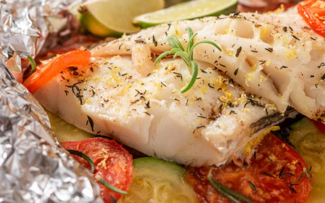

Gatos
Os gatos são os animais de estimação mais populares de todo o mundo.
Sãp brincalhões, muito independentes, curiosos, teimosos, mas são
também extremamente amigáveis e afetivos.
Fotos de gatos
Clique aqui para ver mais fotos

Receitas para café
Café

Receita de Peixe com Batatas
- 500 g de filé de peixe (tilápia, saint peter ou outro)
- 4 batatas grandes descascadas em rodelas de 0,5 centímetro de espessura
- 2 tomates picadinhos
- 1/2 pimentão (se ele for grande)
- 1 cebola média picada em cubos
- 1 colher (sopa) cheia de alcaparras
- Cheiro-verde (salsa e cebolinha) a gosto
- Coentro a gosto (opcional)
- 1/2 colher (sopa) de sal
- 1 dente de alho (pequeno) bem espremido

Minhas receitas